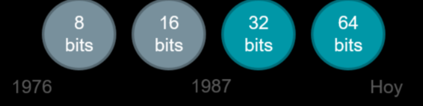
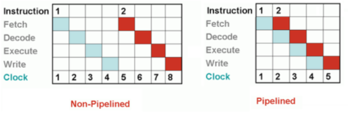
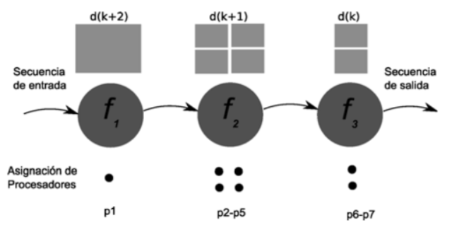
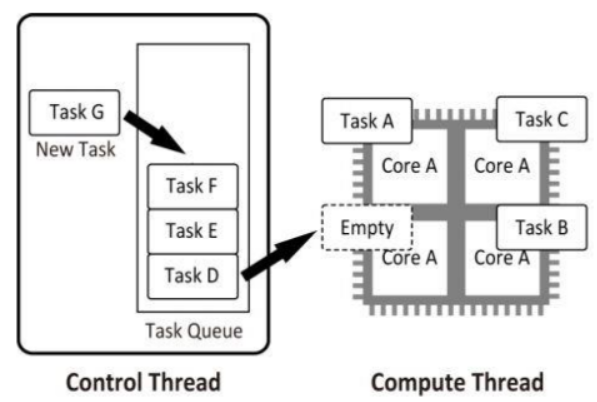

4.2 Tipos de computación paralela
Paralelismo a nivel de bit.
Desde el advenimiento de la integración a gran escala (VLSI) como
tecnología de fabricación de chips de computadora en la década de
1970 hasta alrededor de 1986, la aceleración en la arquitectura de
computadores se lograba en gran medida duplicando el tamaño de la
palabra en la computadora, la cantidad de información que el
procesador puede manejar por ciclo. El aumento del tamaño de la
palabra reduce el número de instrucciones que el procesador debe
ejecutar para realizar una operación en variables cuyos tamaños son
mayores que la longitud de la palabra. Por ejemplo, cuando un
procesador de 8 bits debe sumar dos enteros de 16 bits, el
procesador primero debe adicionar los 8 bits de orden inferior de
cada número entero con la instrucción de adición, a continuación,
añadir los 8 bits de orden superior utilizando la instrucción de
adición con acarreo que tiene en cuenta el bit de acarreo de la
adición de orden inferior, en este caso un procesador de 8 bits
requiere dos instrucciones para completar una sola operación, en
donde un procesador de 16 bits necesita una sola instrucción para
poder completarla.
Históricamente, los microprocesadores de 4 bits fueron sustituidos
por unos de 8 bits, luego de 16 bits y 32 bits, esta tendencia general
llegó a su fin con la introducción de procesadores de 64 bits, lo que
ha sido un estándar en la computación de propósito general durante
la última década.

Este método está “estancado” desde el establecimiento de las arquitecturas de 32 y 64 bits.
Paralelismo a nivel de instrucción.
Los procesadores modernos tienen ''pipeline'' de instrucciones de
varias etapas. Cada etapa en el pipeline corresponde a una acción
diferente que el procesador realiza en la instrucción correspondiente
a la etapa; un procesador con un pipeline de N etapas puede tener
hasta n instrucciones diferentes en diferentes etapas de finalización.
El ejemplo canónico de un procesador segmentado es un procesador
RISC, con cinco etapas: pedir instrucción, decodificar, ejecutar,
acceso a la memoria y escritura. El procesador Pentium 4 tenía un
pipeline de 35 etapas.

Además del paralelismo a nivel de instrucción del pipelining,
algunos procesadores pueden ejecutar más de una instrucción a la
vez. Estos son conocidos como procesadores superescalares. Las
instrucciones pueden agruparse juntas sólo si no hay dependencia de
datos entre ellas. El scoreboarding y el algoritmo de Tomasulo —
que es similar a scoreboarding pero hace uso del renombre de
registros— son dos de las técnicas más comunes para implementar
la ejecución fuera de orden y la paralelización a nivel de instrucción.
Paralelismo de datos.
El paralelismo de datos es el paralelismo inherente en programas
con ciclos, que se centra en la distribución de los datos entre los
diferentes nodos computacionales que deben tratarse en paralelo.
"La paralelización de ciclos conduce a menudo a secuencias
similares de operaciones —no necesariamente idénticas— o
funciones que se realizan en los elementos de una gran estructura de
datos". Muchas de las aplicaciones científicas y de ingeniería
muestran paralelismo de datos.
Una dependencia de terminación de ciclo es la dependencia de una
iteración de un ciclo en la salida de una o más iteraciones anteriores.
Las dependencias de terminación de ciclo evitan la paralelización de
ciclos.

Cascada de paralelismo de datos. En este ejemplo se observan 7 procesadores ejecutando una
cascada. La primera etapa corre en un procesador, la segunda etapa en 4 procesadores, y la tercera
etapa en 2 procesadores.
Paralelismo de tareas.
Paralelismo de tareas es un paradigma de la programación
concurrente que consiste en asignar distintas tareas a cada uno de los
procesadores de un sistema de cómputo. En consecuencia, cada
procesador efectuará su propia secuencia de operaciones.
En su modo más general, el paralelismo de tareas se representa
mediante un grafo de tareas, el cual es subdividido en subgrafos que
son luego asignados a diferentes procesadores. De la forma como se
corte el grafo, depende la eficiencia de paralelismo resultante. La
partición y asignación óptima de un grafo de tareas para ejecución
concurrente es un problema NP-completo, por lo cual en la práctica
se dispone de métodos heurísticos aproximados para lograr una
asignación cercana a la óptima.
Sin embargo, existen ejemplos de paralelismo de tareas restringido
que son de interés en programación concurrente. Tal es el caso del
paralelismo encauzado, en el cual el grafo tiene forma de cadena,
donde cada nodo recibe datos del nodo previo y sus resultados son
enviados al nodo siguiente. El carácter simplificado de este modelo
permite obtener paralelismo de eficiencia óptima.

Cada hilo realiza una tarea distinta e independiente de las demás.
4.2.1 Clasificación.
Las computadoras paralelas se pueden clasificar de acuerdo con el
nivel en el que el hardware soporta paralelismo. Esta clasificación es
análoga a la distancia entre los nodos básicos de cómputo. Estos no
son excluyentes entre sí, por ejemplo, los grupos de
multiprocesadores simétricos son relativamente comunes.
* Computación multinúcleo: un procesador multinúcleo es un
procesador que incluye múltiples unidades de ejecución
(núcleos) en el mismo chip. Un procesador multinúcleo puede
ejecutar múltiples instrucciones por ciclo de secuencias de
instrucciones múltiples.
* Multiprocesamiento simétrico: un multiprocesador simétrico
(SMP) es un sistema computacional con múltiples
procesadores idénticos que comparten memoria y se conectan
a través de un bus. La contención del bus previene el escalado
de esta arquitectura.
* Computación en clúster: un clúster es un grupo de
ordenadores débilmente acoplados que trabajan en estrecha
colaboración, de modo que en algunos aspectos pueden
considerarse como un solo equipo.
* Procesamiento paralelo masivo: tienden a ser más grandes
que los clústeres, con «mucho más» de 100 procesadores. En
un MPP, cada CPU tiene su propia memoria y una copia del
sistema operativo y la aplicación.
* Computación distribuida: la computación distribuida es la
forma más distribuida de la computación paralela. Se hace uso
de ordenadores que se comunican a través de la Internet para
trabajar en un problema dado.
* Computadoras paralelas especializadas: dentro de la
computación paralela, existen dispositivos paralelos
especializados que generan interés. Aunque no son específicos
para un dominio, tienden a ser aplicables sólo a unas pocas
clases de problemas paralelos.
* Cómputo reconfigurable con arreglos de compuertas
programables: el cómputo reconfigurable es el uso de un
arreglo de compuertas programables (FPGA) como
coprocesador de un ordenador de propósito general.
* Cómputo de propósito general en unidades de
procesamiento gráfico (GPGPU): es una tendencia
relativamente reciente en la investigación de ingeniería
informática. Los GPUs son co-procesadores que han sido
fuertemente optimizados para procesamiento de gráficos por
computadora.
* Circuitos integrados de aplicación específica: debido a que
un ASIC (por definición) es específico para una aplicación
dada, puede ser completamente optimizado para esa
aplicación. Como resultado, para una aplicación dada, un
ASIC tiende a superar a un ordenador de propósito general.
* Procesadores vectoriales: pueden ejecutar la misma
instrucción en grandes conjuntos de datos. Tienen operaciones
de alto nivel que trabajan sobre arreglos lineales de números o
vectores.
4.2.2 Arquitectura de computadores secuenciales.
A diferencia de los sistemas combinacionales, en los sistemas
secuenciales, los valores de las salidas, en un momento dado, no
dependen exclusivamente de los valores de las entradas en dicho
momento, sino también dependen del estado anterior o estado
interno. El sistema secuencial más simple es el biestable, de los
cuales, el de tipo D (o cerrojo) es el más utilizado actualmente.
El sistema secuencial requiere de la utilización de un dispositivo de
memoria que pueda almacenar la historia pasada de sus entradas
(denominadas variables de estado) y le permita mantener su estado
durante algún tiempo, estos dispositivos de memoria pueden ser
sencillos como un simple retardador o celdas de memoria de tipo
DRAM, SRAM o multivibradores biestables también conocido
como Flip-Flop.
Tipos de sistemas secuenciales
En este tipo de circuitos entra un factor que no se había considerado
en los circuitos combinacionales, dicho factor es el tiempo, según
como manejan el tiempo se pueden clasificar en: circuitos
secuenciales síncronos y circuitos secuenciales asíncronos.
Las arquitecturas de ordenador en las que cada elemento de la
memoria principal se puede acceder con igual latencia y ancho de
banda son conocidas como arquitecturas de acceso uniforme a
memoria (UMA). Típicamente, sólo se puede lograr con un sistema
de memoria compartida, donde la memoria no está distribuida
físicamente. Un sistema que no tiene esta propiedad se conoce como
arquitectura de acceso a memoria no uniforme (NUMA). Los
sistemas de memoria distribuidos tienen acceso no uniforme a la
memoria.